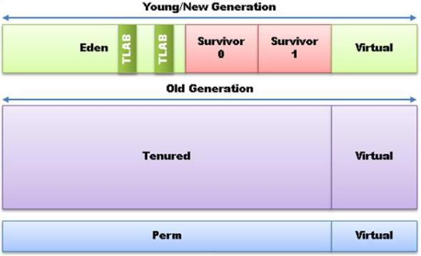
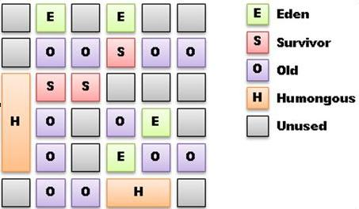

原文：Java Garbage Collection Distilled{:target=”_blank”}
Serial, Parallel, Concurrent, CMS, G1, Young Gen, New Gen, Old Gen, Perm Gen, Eden, Tenured, Survivor Spaces, Safepoints, 还有数百个 JVM 的启动参数。当你试着优化 GC 来追求你的 Java 应用的高吞吐量和低延迟，你是否对这些参数感到困惑？如果是，也别担心，你不是一个人。GC 的文档看起来像是飞机的使用手册。每个把手和刻度盘都有详细的解释，但是没有告诉你如何飞起来的指南。这篇文章将尝试去解释如何在特定的压力下选择和优化 GC。
本文将只讨论 Oracle Hotspot JVM 和 Open JDK 的垃圾回收机制，因为它们是最常用的。文章末尾将会讨论其他商用的 JVM 作为其他选择。
古语有云，“有得必有失”。在优化 GC 时，我们从三个主要方面来设定垃圾回收的性能指标。
吞吐率： 在一定时间内应用可以完成的工作量。用 -XX:GCTimeRatio=99 来设定目标吞吐率；99为默认值，也就是说 GC 使用1%的时间。
延迟：GC 对系统响应时间的影响。用 -XX: MaxGCPauseMillis=
内存：系统用来存储状态使用的内存，JVM管理内存的时候经常会复制和移动内存中的数据。应用保存的活动对象的集合被称为活动集合（Live Set）。参数 -Xmx
注意：Hotspot经常不会达到这些指标（会有比较大的偏差），并且会没有任何警告而继续运行。
目标延迟是一个统计分布（？）。有时为了缩小或减少最坏情况下的延迟而增加了平均延迟，这是可以接受的。对于“实时”的概念，我们不应该认为是达到最小的延迟，而是不管吞吐率的大小，都有一个可以预期的确定的延迟。
对于某些应用，吞吐率是最重要的指标。举个栗子，一个长时间运行的批处理任务；只要所有的任务能够更快的完成，有时因为 GC 而造成几秒钟的暂停无关紧要。
对于其他类型的应用，从有用户交互的应用到金融交易系统，如果系统有几秒钟甚至几毫秒无法及时响应，都有可能造成灾难。在金融交易系统中，经常为了稳定的延迟而牺牲一些吞吐率。也有些应用需要在内存有限的设备上运行，这时就需要同时牺牲延迟和吞吐率。
在多数情况下，增大内存可以减少 GC 的平均开销。
最坏情况下的 GC 开销（通常是 GC 产生的暂停造成的），可以通过减少堆
内存来减少。
暂停的频率，可以通过控制内存堆和回收代的大小，和控制应用分配对象的
速率来控制。
暂停的频率，可以通过并行执行 GC 来减少，这有时会减少吞吐率。
垃圾回收算法的优化经常根据这种假设：大多数对象的生存周期都很短，而相对很少部分对象会活很久。在多数的应用中，生存周期很长的对象占了应用分配的所有对象的很小的一部分。在垃圾回收理论中，这种情况陪称为 infant mortality 或者 weak generational hypothesis。比如循环操作的iterator的生存周期大多数很短，而静态字符串则一直存在。
实验表明，分代垃圾回收器比不分代的垃圾回收器，在吞吐率方面要好一个数量级，因此在服务器端的 JVM 中被广泛使用。通过对对象进行分代，我们知道一片新分配的内存中，只有很少的活动对象，因此可以将这些活动对象复制到另一个存放老对象的区域中，这个效率会很高。Hotspot 的垃圾回收器用存活了多少轮 GC 来表明对象的年龄。
注意：如果你的应用不停的产生存活时间很长的对象，那么垃圾回收将会用掉很多时间，而且你会需要一大部分时间来优化垃圾回收。这是因为分代过滤的低效和更多的对老代的回收造成了 GC 的低效。老代的活动对象更加密集，因此对老代的回收算法效率更低。分代的垃圾回收器分成两个不同的回收周期：Minor collection，收集生命周期短的对象，和频率较低的 Major collection，收集老代的区域。
Stop-the-world 事件造成了应用在 GC 的时候暂停响应。因为实际工程的原因，垃圾回收器管理内存的时候，必须定期地停止应用的运行。根据算法的不同，不同回收器会在不同的时间停止应用的运行。要将应用完全停止，需要暂停所有线程。垃圾回收器通过给线程发送信号，告诉线程在“安全点”停下来，安全点是在程序执行过程中，所有 GC roots 都已知了，并且所有内存堆上的对象都在稳定的状态。根据正在做的事情，一个线程可能需要一些时间来达到安全点。对安全点的检查通常在方法返回和循环的边界上执行，但是可以在某些地方进行优化，使安全点检查更少的发生。例如，如果一个线程正在复制一个大数组，克隆一个大对象，或者进行一个有限的循环计数，可能需要数毫秒才能达到安全点。达到安全点的延迟是低延迟应用的一个重要考量。这个时间可以通过打开参数 -XX:+PrintGCApplicationStoppedTime （和其他一些 GC 参数）来显示。
注意：对于有很多运行线程的应用来说，当线程从 stop-the-world 恢复运行时，系统会受很大的调度压力。因此对stop-the-world依赖更少的算法有更好的性能优化的潜力。
要理解不同的回收器的工作方式，最好要了解 Java 的堆的结构，并且知道堆是如何支持分代回收的。
Eden 是大多数对象最初分配空间的区域。Survivor 空间是存放存活了一次 Eden 空间 GC 的对象的临时区域。Survivor 区域的使用将在讨论 minor collection 的时候描述。Eden 和 survivor 空间被合称为“新生代”（young or new generation）。
存活时间足够长的对象最终会被放入老年代（tenured）空间。
永久代（perm generation）是 JVM 存储那些它知道基本不会被释放的对象，如类和静态字符串。不幸的是，很多应用使用的运行过程中进行类加载，使这个假设（类是不会被释放的）不成立了。在 Java 7 中，interned 字符串从永久代挪到了老年代，从 Java 8 开始，永久代将被去掉，本文将不讨论永久代。多数其他的商业垃圾回收器不使用单独的永久代空间，所有长期存活的对象都放入老年代。
注意：虚拟空间允许回收器调整各个区域的大小，以达到目标的吞吐率和延迟。回收器会保存每个回收阶段的统计数据并相应调整各区域的大小以达到目标。
为避免竞争，每个线程有一个 TLAB (Thread Local Allocation Buffer)用来分配对象。TLAB 使多线程分配对象不会因为竞争而出现瓶颈。通过 TLAB 分配对象的开销是很低的，它仅仅将指针往后移动这个对象的大小，这在很多平台上只需要10来个指令。Java 的堆内存的分配甚至比 C 的 malloc 开销还小。

注意：虽然单个对象的内存分配开销很小，minor collection 被触发的频率与对象的分配频率成线性关系。
当一个线程用完了 TLAB，它就向 Eden 空间申请一块新的。当 Eden 空间被填满就会触发一个 minor colleciton。
关于参数 -XX:PretenureSizeThreshold=n。一些对象（比如一个大数组）可能太大而无法放入新生代，因此必须被放入老年代。如果这个参数设置为小于 TLAB 的大小，那么如果对象可以被放入 TLAB，则不会被放入老年代。新的 G1 对于大对象有不同的分配方式，后面将会单独讨论。
当 Eden 满了之后，会触发一次 minor collection。所有新生代中活动的对象将被复制到 survivor 空间或是老年代。复制到老年代被成为 promotion 或 tenuring。两种情况下会发生 promotion， 对象已经足够老了（-XX:MaxTenuringThreshold），或者 survivor 空间溢出了。
活动对象是那些应用可以达到的对象；其他的所有对象都是不能达到的，因此被认为是“死的”。在 minor collection 中，复制对象的过程首先从 GC Root 开始，不断地复制可以到达的对象到 survivor 区域。GC Roots 通常包括应用和 JVM 的静态变量引用，和线程的运行栈上的引用，这些是指向应用的可到达对象。
在分代回收中，新生代的可到达的 GC Roots 还包括从老年代指向新生代的引用。这些引用也必须被处理以保证新生代中的所有可到达对象都存活下来。回收器使用 card table 来查找这些代之间的引用。Hotspot 的 card table 是一个字节数组，每个字节用来记录对应的老年代中的512个字节是否有指向新生代的引用。当应用被保存到堆中时，store barrier 代码会在 card table 中记录一下可能的老年代新生代间的引用。在回收的时候，card table 会被扫描，检查是否有代间的引用，并作为新生代的额外的 GC Roots。因此 minor collection 的开销中用一个固定的部分，直接与老年代的大小线性相关。
Hotspot 的新生代有两个 survivor 空间，轮流作为 to-space 和 from-space。在 minor collection 开始的时候，to-space 空间总是空的，作为复制对象的目标空间。前一次 minor collection 的目标 survivor 空间是 from-space 的一部分，from-space 也包括包含需要复制的对象的 Eden 空间。
Minor GC collection 的开销通常由向 survivor 和 tenured 空间复制对象的开销决定。Minor collection 中没有存活的对象可以被直接丢弃。Minor collection 的工作量与活动对象的数量而不是新生代的大小成正比。当 Eden 空间增加一倍，minor collection 的总时间几乎会减半。因此牺牲内存可以获得吞吐率。增加 Eden 的大小会造成一次回收用掉更多时间，但是如果需要 promote 的对象数量和老年代的大小是一样的，这个时间的增加相对来说很小。
注意：在 Hotspot 中，minor colleciton 是 stop-the-world 的事件。当堆变大而活动对象变多时，这变成一个大问题。我们已经需要将新生代的回收变成同步的来达到暂停时间的指标。
Major collections 回收老年代里的对象，以便腾出空间给从新生代 promote 上来的对象。在多数应用中，大部分程序的状态都在老年代中。对老年代的 GC 算法有很多不同的种类。有些会在老年代填满的时候压缩空间，而有些会并行回收来防止空间被填满。
老年代的回收器会尝试预测什么时候需要进行回收来预防 promotion 失败。回收器会跟踪老年代的 fill 阈值，当超过阈值时会进行回收。当这个阈值不足以满足 promotion 的需求时，就会触发 FullGC。FullGC 先 promote 新生代中所有活动对象，再对老年代进行回收和压缩。Promotion 失败是很昂贵的操作，因为状态和已经 promote 的对象需要被回滚，之后才能进行 FullGC。
注意：为了避免 promotion 失败，你需要调整老年代为容纳 promotion 允许的 padding（-XX:PromotedPadding=
注意：当需要增大堆时，会触发 FullGC。可以通过将 -Xms 和 -Xmx 设置为相同的值来避免这些 FullGC。
除了 FullGC，最大的 stop-the-world 暂停是对老年代的压缩。压缩需要的时间与 tenure 空间中的活动对象的数量成线性关系。
有时，增大 survivor 空间和增大对象被 promote 到 tenure 空间的年龄（-XX:MaxTenuringThreshold），可以减小 tenure 空间被填满的速度。然而，这些也会增加 minor collection 的开销和暂停时间，因为在 survivor 空间之间复制对象的开销增大了。
串行收集器（-XX:UseSerialGC）是最简单的垃圾收集器，对单处理器机器是个不错的选择。并且它在各种收集器中有最小的内存足迹。串行收集器对 minor 和 major collection 都使用单线程。对象在 tenure 空间的分配使用简单的向后挪动指针算法。当 tenure 空间满了以后，会触发 major collection。
并行垃圾收集器有两种形式。Parallel 收集器（-XX:+UseParallelGC）用多线程运行 minor collection，用单线程运行 major collection。Parallel Old 收集器（-XX:+UseParallelOldGC）从 Java 7u4 开始被作为默认设置，它用多线程运行 minor 和 major collection。对象在 tenure 空间中的分配使用简单的挪动指针算法。当 tenure 空间满了之后会触发 major collection。
在多处理器的机器上，Parallel Old 收集器是各种收集器中吞吐率最高的。只有在进行垃圾收集时它才会对进程的运行有影响，用最有效率的算法并行进行垃圾收集。Parallel Old 收集器非常适合批处理任务。
对老年代的收集中，需要保留的对象数量对开销的影响要大于堆的大小的影响。因此，要提升 Parallel Old 收集器的效率，可以提供更多内存，虽然这会延长暂停时间，但是会减小暂停的频率。
这个收集器的 minor collection 是最快的，因为 promotion 只是一个简单的移动指针和复制操作。
对于服务器应用，Parallel Old 收集器应该是第一选择。然而如果 major collection 的暂停超出了应用可以承受的范围，则你需要考虑使用一种并发收集器，并发收集器可以应用运行的同时进行收集 tenure 空间的对象。
注意：在现代的硬件上，压缩老年代的的时候，每 GB 的对象大概会有 1 到 5 秒的暂停时间。
CMS 收集器（-XX:+UseConcMarkSweepGC）在老年代中运行，在 major collection 时收集不再活动的对象。它与应用并发执行，目标为在老年代中保持足够的空间，避免发生 promotion 失败。
Promotion 失败会触发 FullGC。CMS 按照以下过程运行：
初始标记（stop-the-world）：找到 GC Roots。
并发标记：从 GC Roots 出发，标记所有可到达的对象。
并发预清理：检查在并发标记阶段被更新的对象的引用和被 promote 的对象，进行再次标记。
重新标记（stop-the-world）：找到在预清理阶段被更新过的对象引用。
并发扫除：回收死掉对象的内存，更新 free 列表。
并发重置：重置数据结构，为下次运行做准备。
当老年代中的对象死掉之后，CMS 会回收它的空间并放入 free 列表。当进行 promtion 的时候，必须从 free 列表中找到一块合适的内存来存放 promote 过来的对象。这增大了 promotion 的开销，因此 CMS 的 minor collection 的开销比 Parallel 收集器中的大。
注意：CMS 是不进行压缩的收集器，这会造成老年代的碎片化。Promotion 可能会因为在老年代中找不到一块足够大的内存块而失败。当这发生时，promotion 失败的信息会被记录下来，并且触发一次 FullGC 来压缩活动的 tenure 对象。对于这种压缩驱动的 FullGC， 暂停会大于 Parallel Old 回收器的 major collection，因为 CMS 使用单线程进行压缩。
CMS 大多数情况下和应用并发执行，这有几点含义：第一，处理器的时间被回收器占用了，减少了应用可用的处理器时间。CMS 需要的时间和 tenure 空间中对象的数量成线性关系。第二，在并发 GC 的某些阶段，所有应用的线程必须来到 safepoint，以标记 GC Roots，并且进行并行的重新标记来检查更新。
注意：如果一个应用会产生大量的 tenure 对象的更新，那么重新标记阶段会很费时，极端情况下可能比 Parallel Old 收集器的完全压缩花更多的时间。
CMS 减少了 FullGC 的频率，代价是同时减少了吞吐率，增加了 minor collection 的开销，和更大的内存开销。相比于并行回收器，吞吐率可降低 10% 至 40%，这取决于 promotion 的频率。CMS 同时需要额外的 20% 的内存，来存放额外的数据结构，和浮动垃圾（floating garbage），浮动垃圾是在并发标记的时候漏掉的对象，这些对象在下次周期中才能被回收。
有时，增大新生代和老年代，可以降低 promotion 的频率，并减少碎片化。
注意：当 CMS 无法以足够的速率回收垃圾，来跟上 promotion 的速度，会发生“并行模式失败”（concurrent mode failures），这可以从日志中看到。当回收开始的太晚会发生“并行模式失败”，可以进行优化来解决问题。但是当回收速率达不到 promotion 的速度时，这个也会发生，如果是这种情况，你可能需要修改你的应用来降低 promotion 的压力。增加内存有时会使情况变得更坏，因为 CMS 将需要扫描更多内存。
G1（+XX:+UseG1GC）是 Java 6 引入的新的回收器，现在正式在 Java 7 中支持了。它是一个部分并发的回收算法，同时也尝试在更小的stop-the-world 中增量压缩 tenure 空间，以减少碎片化，最小化 FullGC 的次数。G1 是一个分代回收器，但是与其他回收器不同，它不是将连续的空间用于相同的用途，而是将堆根据不同的用途分成固定大小的区域。
G1 并发地标记区域以跟踪区域间的引用，并且集中对含有空闲空间最多的区域进行收集。这些区域中的对象在 stop-the-world 暂停中被清扫到一个空闲的区域，同时进行了压缩。大于区域大小 50% 的对象被分配到大型区域，大型区域的大小是普通区域的几倍。G1 里，大型区域中的分配和回收都很费时，但是目前还没有什么办法来优化。

在任何带压缩的收集器中，最大的挑战不是移动对象，而是更新指向这些对象的引用。如果一个对象被很多其他的区域引用，则更新这些引用的时间会比移动对象的时间多很多。G1 使用“记忆集”（Remembered Sets）来跟踪从一个区域中被其他区域引用到的对象。如果记忆集变得很大，那么 G1 会变得相当慢。当把对象从一个区域清扫到另一个区域时，stop-the-world 的时间与有引用的区域数量成正比，这些有引用的区域需要被扫描并且更新。
维护这些记忆集增大了 minor collection 的开销，造成 G1 的暂停时间大于 Parallel Old 和 CMS 收集器的 minor collection。
可以对 G1 的目标延迟进行调整，-XX:MaxGCPauseMillis=
对于堆的大小较大并且趋于碎片化的应用，并且 0.5-1.0 秒的压缩暂停是可以忍受时，G1 是一个不错的通用回收器。CMS 中会有因为碎片化而带来的暂停，G1 可以降低这种最坏情况下的暂停的频率，代价是更多的 minor collection 和对老年代的增量压缩。多数的暂停被限制在区域中，而不是整个堆的压缩。
同 CMS 一样，G1 也可能跟不上 promotion 的速度，而进行 stop-the-world 的 FullGC。就像 CMS 有 concurrent mode failure，G1 有 evacuation failure，在日志中为 to-space overflow。这发生在没有空闲区域可以进行清扫对象。如果发生这个问题，可以尝试增加堆的大小，增多标记线程，但是有时需要修改应用来降低分配对象的速度。
G1 的一个挑战性的问题是处理被大量引用的对象和区域。在存货对象没有被其他区域大量引用时，增量 stop-the-world 压缩工作得不错。如果一个对象或区域被其他区域大量引用，记忆集就会变得很大，G1 会避免回收这些对象。最终不得不回收时，压缩堆时会造成高频率的中等长度的暂停。
CMS 和 G1 常常被称为 “部分并发回收器”。当你观察它们做的工作会发现，新生代、promotion 甚至大部分的老年代的工作不是并发的。CMS 在老年代中大部分是并发的；G1 更像一种 stop-the-world 的增量收集器。CMS 和 G1 都有耗时且频繁的 stop-the-world 事件，而且最坏的情况使它们不适合用于严格要求低延迟的应用，如金融交易和用户交互界面。
有其他的回收器，比如 Oracle JRockit Real Time，IBM Websphere Real Time，和 Azul Zing。JRockit 和 Websphere 的回收器与 CMS 和 G1 相比，在大多数情况下有延迟上的优势，但是经常有吞吐率上的问题和严重的 stop-the-world。Zing 是作者知道的唯一可以真正进行并发回收和压缩，同时在所有代中维持高吞吐率的 Java 回收器。Zing 有 1 毫秒以下的 stop-the-world，但是这是因为阶段切换，与活动对象集的大小无关。
在高分配对象速率下和固定的堆大小时，JRockit RT 在典型情况能达到几十豪秒的暂停时间，但是需要偶尔进行全体压缩暂停。Websphere RT 能通过限制对象分配的速率和活动集的大小，达到 10 毫秒以下的暂停时间。Zing 在高速分配对象时，通过并行化所有阶段，可以达到 1 毫秒以下的暂停时间。不管堆的大小，Zing 都可以维持这样的稳定的性能，使用户可以增大堆大小来达到吞吐率或是对象模型的需求，而不用担心暂停时间增加。
对所有并发收集器来说，要获得更低的延迟，就必须牺牲一部分吞吐率，和内存空间。取决于回收算法，你可能需要牺牲一点吞吐率，但是总是会牺牲很多内存空间。如果是真正的stop-the-world很少的并发，就需要更多的处理器核心做并行处理来达到吞吐率的需求。
注意：所有并发回收器在有足够的内存空间时表现更有效率。作为一个基本原则，你应当设置堆的大小为至少两倍到三倍于活动对象集的大小。然而，随着应用的吞吐率、分配对象和 promotion 的速率的增加，维护并发操作所需的空间也相应增加。所以对于高吞吐率的应用来说，需要有更大的堆空间。现在的机器基本都有很大的内存，因此服务器端的内存空间基本不会成为问题。
要观察你的应用的垃圾回收器的动作，JVM 启动时加上至少这些参数：
-verbose:gc
-Xloggc:<filename>
-XX:+PrintGCDetails
-XX:+PrintGCDateStamps
-XX:+PrintTenuringDistribution
-XX:+PrintGCApplicationConcurrentTime
-XX:+PrintGCApplicationStoppedTime
然后用工具（比如 Chewiebug{:target=”_blank”}）加载来分析。
要动态观察 GC 过程，打开 JVisualVM 并且安装 Visual GC 插件。你就能看到动态的 GC 过程，如下图：
如果要了解你的应用对 GC 的需求，你需要有能重复运行的有代表性的性能测试。在你理解了不同的回收器的工作原理之后，在不同的 JVM 配置上运行性能测试，直到达到吞吐率和延迟的指标。从用户的角度来测量延迟是很重要的。可以记录下每个请求的延迟时间并画出直方图，可以参看这里{:target=”_blank”}。如果有在你可接受范围之外的延迟的高峰，你可以试着讲他们与 GC 的日志结合起来看是否是 GC 的问题。延迟高峰也有可能是其他问题造成的。另一个有用的工具是 jHiccup{:target=”_blank”}，它能帮你跟踪 JVM 和系统整体的暂停。
如果延迟的高峰是 GC 造成的，调整 CMS 或者 G1，看是否可以达到目标。有时这是无法做到的，因为应用有很高的对象分配和 promotion 速率，而目标延迟又很低。调整 GC 会是一个很需要技巧的工作，通常需要修改应用来降低分配对象的速率，或者缩短对象的生命周期。如果是这种情况，那么你需要在花时间资源优化 GC 和 购买商业的并发和拥有压缩的 JVM（比如 JRockit Real Time 或者 Azul Zing）中做出权衡。